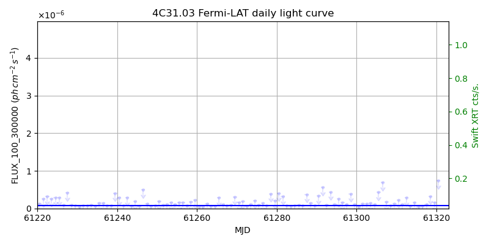
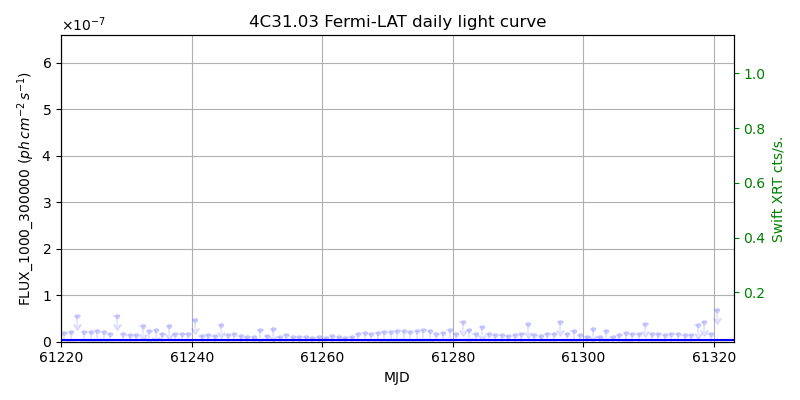
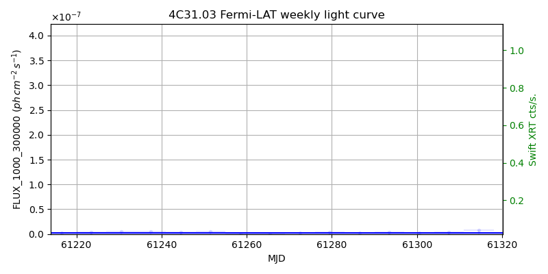

LAT Lightcurve site: https://fermi.gsfc.nasa.gov/ssc/data/access/lat/msl_lc/source/4C_31d03
Swift site: https://www.swift.psu.edu/monitoring/source.php?source=4C31.03
NED: Query
Time of last update of this page: UT: 2026-10-10 15:11 (MJD: 61323.633)
| Property | Value |
|---|---|
| R.A. | 1:12:50.40 |
| Dec. | 32:08:16.8 |
| z | 0.603 |
| 3FGL SpectrumType | PowerLaw |
| 3FGL PL Index | 2.36 |
| 3FGL Flux_100_300000 | 7.01e-08 1 / (s cm2) |
| 3FGL Flux_1000_300000 | 3.04e-09 1 / (s cm2) |
| 3FGL Flux >200 GeV | 2.22e-12 1 / (s cm2) |
| 3FGL Extrap. Crab >200 GeV | 0.01 |
| 3FGL Flux After EBL Absorption >200GeV | 2.12e-13 1 / (s cm2) |
| 3FGL EBL Crab Fraction >200GeV | 0.00 |

| MJD | dMJD | Flux | dFlux | Frac3FGL | FracCrab>200GeV | EBLFracCrab>200GeV |
|---|---|---|---|---|---|---|
| 61316.50 | 0.50 | 6.12e-08 | 0.00e+00 | 0.00 | 0.00 | 0.00 |
| 61317.50 | 0.50 | 1.16e-07 | 0.00e+00 | 0.00 | 0.00 | 0.00 |
| 61318.50 | 0.50 | 3.24e-07 | 0.00e+00 | 0.00 | 0.00 | 0.00 |
| 61319.50 | 0.50 | 1.57e-07 | 0.00e+00 | 0.00 | 0.00 | 0.00 |
| 61320.50 | 0.50 | 7.42e-07 | 0.00e+00 | 0.00 | 0.00 | 0.00 |
| MJD | dMJD | Flux | dFlux | Frac3FGL | FracCrab>200GeV | EBLFracCrab>200GeV |
|---|---|---|---|---|---|---|
| 61286.50 | 3.50 | 1.86e-08 | 0.00e+00 | 0.00 | 0.00 | 0.00 |
| 61293.50 | 3.50 | 1.63e-07 | 0.00e+00 | 0.00 | 0.00 | 0.00 |
| 61300.50 | 3.50 | 2.10e-08 | 0.00e+00 | 0.00 | 0.00 | 0.00 |
| 61307.50 | 3.50 | 1.38e-07 | 0.00e+00 | 0.00 | 0.00 | 0.00 |
| 61314.50 | 3.50 | 3.00e-08 | 0.00e+00 | 0.00 | 0.00 | 0.00 |

| MJD | dMJD | Flux | dFlux | Frac3FGL | FracCrab>200GeV | EBLFracCrab>200GeV |
|---|---|---|---|---|---|---|
| 61316.50 | 0.50 | 1.51e-08 | 0.00e+00 | 0.00 | 0.00 | 0.00 |
| 61317.50 | 0.50 | 3.60e-08 | 0.00e+00 | 0.00 | 0.00 | 0.00 |
| 61318.50 | 0.50 | 4.19e-08 | 0.00e+00 | 0.00 | 0.00 | 0.00 |
| 61319.50 | 0.50 | 1.62e-08 | 0.00e+00 | 0.00 | 0.00 | 0.00 |
| 61320.50 | 0.50 | 6.74e-08 | 0.00e+00 | 0.00 | 0.00 | 0.00 |

| MJD | dMJD | Flux | dFlux | Frac3FGL | FracCrab>200GeV | EBLFracCrab>200GeV |
|---|---|---|---|---|---|---|
| 61286.50 | 3.50 | 2.45e-09 | 0.00e+00 | 0.00 | 0.00 | 0.00 |
| 61293.50 | 3.50 | 3.87e-09 | 0.00e+00 | 0.00 | 0.00 | 0.00 |
| 61300.50 | 3.50 | 2.41e-09 | 0.00e+00 | 0.00 | 0.00 | 0.00 |
| 61307.50 | 3.50 | 3.53e-09 | 0.00e+00 | 0.00 | 0.00 | 0.00 |
| 61314.50 | 3.50 | 7.47e-09 | 0.00e+00 | 0.00 | 0.00 | 0.00 |
--------------------------------------------------------- Using user-supplied coords: 1:12:50.40 32:08:16.8 2000 --------------------------------------------------------- FLWO UT night of: 2026-10-11 Local Sid. @ Midnight: 00:55 Sunset (-15.0) (local, UT): 19:04 02:04 Sunrise (-15.0) (local, UT): 05:18 12:18 Moonrise (local, UT): Moonset (local, UT): Moon phase: 0.01 --------------------------------------------------------- AzTime LSID UT Obj_el Obj_az Mn_el Mn_az Sep. --------------------------------------------------------- 19:04 19:58 02:04 24.8 66.0 -16.1 264.2 160.9 19:34 20:29 02:34 30.7 68.7 -22.3 267.8 161.0 20:04 20:59 03:04 36.8 71.2 -28.5 271.5 161.1 20:34 21:29 03:34 42.8 73.5 -34.7 275.4 161.1 21:04 21:59 04:04 49.0 75.7 -40.8 279.7 161.2 21:34 22:29 04:34 55.2 77.8 -46.8 284.6 161.3 22:04 22:59 05:04 61.5 79.7 -52.7 290.5 161.4 22:34 23:29 05:34 67.8 81.4 -58.4 297.7 161.4 23:04 23:59 06:04 74.2 82.8 -63.6 307.3 161.5 23:34 00:29 06:34 80.5 83.4 -68.1 320.3 161.5 00:04 00:59 07:04 86.9 77.9 -71.3 338.2 161.6 00:34 01:29 07:34 86.7 281.5 -72.6 0.4 161.6 01:04 01:59 08:04 80.3 276.6 -71.5 22.7 161.7 01:34 02:30 08:34 74.0 277.2 -68.3 40.8 161.7 02:04 03:00 09:04 67.6 278.6 -63.9 54.1 161.8 02:34 03:30 09:34 61.3 280.4 -58.7 63.8 161.8 03:04 04:00 10:04 55.0 282.3 -53.1 71.2 161.8 03:34 04:30 10:34 48.8 284.4 -47.3 77.2 161.9 04:04 05:00 11:04 42.7 286.6 -41.4 82.2 161.9 04:34 05:30 11:34 36.6 288.9 -35.3 86.6 161.9 05:04 06:00 12:04 30.6 291.4 -29.2 90.6 162.0 05:18 06:14 12:18 27.9 292.6 -26.5 92.4 162.0 --------------------------------------------------------- Dark hours >55 deg.: 5.52 srcstart (UT): 2026-10-11 04:32 srcend (UT): 2026-10-11 10:04